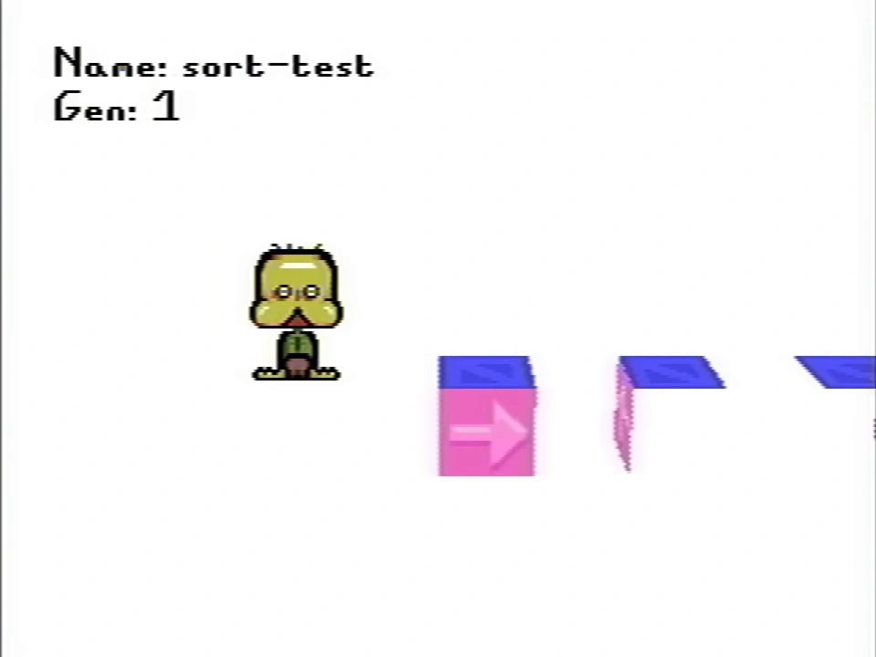
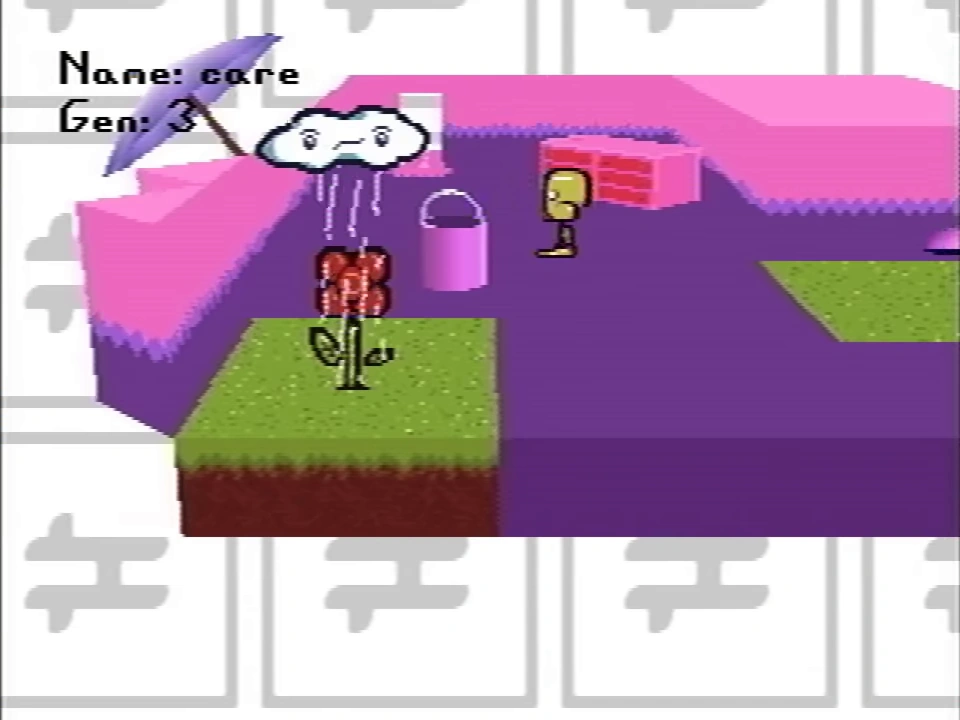
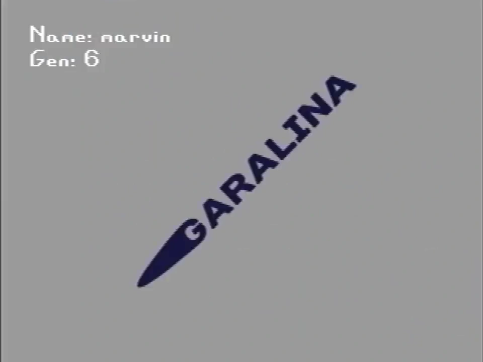
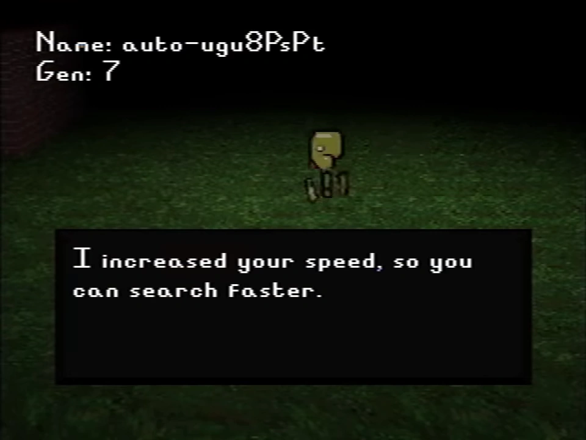

Gen.
This article is about a topic that has no widely accepted interpretation or clear details.


{kind=link}
The Gen. option within Room Impulse.
Throughout the secret menu, a property called "Gen." is included in the settings prior to playing a recording or Room Impulse.
Gens are, presumably, different builds of Petscop that are present on the CD; gens are seen to go up to 15, but only some gen values are directly shown in footage. They cannot be directly manipulated and are not presented to the player, except through the secret menu.
"Gen." is likely an abbreviation of a longer term. It is commonly believed to be "generation", though this is not confirmed.
History and appearances
|
This section of the article is incomplete. If you have information, you can help add to this section. |
The "Gen." setting is first seen in Petscop 17, when Room Impulse was accessed in the secret menu. It is also seen in the playback settings of the All Recordings section in Petscop 19; the selected "Gen." value when initializing a recording is displayed in the top left with the recording name.
The gens shown in Petscop 19 (1 through 5) through recording playback mainly focus on Even Care.
The gens shown in Petscop 20 (6 through 8) through recording playback feature a Gift Plane and Even Care closer to what Paul experiences, along with parts of the Newmaker Plane. It is presumed these are modifications started for Marvin, as he is playing the recordings showing these gens.
Gens 9, 11, 12, 13, 14, and 15 are never directly shown in footage.
Gens
This section covers details on confirmed gen values shown in footage.
Gen 1
{kind=link}

{kind=link}
The sort-test recording, shown during Petscop 19.
Gen 1 appears to be solely a programming test build, using the "sort-test" room. It is shown in a recording also titled "sort-test". It uses an older guardian sprite, without animations. The "test5" recording is also on this build.
Gen 2
Gen 2 is shown in the first five "mike" recordings. The older sprite is still in use, but the rooms shown are older builds of Even Care, mainly the Connector room and Randice & Wavey's room with different textures. There is no collision, but there are loading zones. The "mike2" recording features an egg that was hidden inside the game, which can be collected and shows some basic collision detection and a primitive textbox system.
Gen 3
{kind=link}

{kind=link}
A recording of Care in gen. 3, from Petscop 19.
Gen 3 is a more functional version of the previous build, with collisions, and a few implemented items.
The guardian sprite now uses the final, animated version.
The Work Zone music is playing, and sound effects have been added. Room backgrounds have been implemented. The bucket is present, along with Wavey and Randice, which can be caught.
This is the first gen to show pieces and the pause menu.
Gen 4
Gen 4 makes additional revisions to Even Care, using the final textures. It is the earliest gen shown with Amber and Roneth (and their corresponding rooms).
Gen 5
Gen 5 is another revision to Even Care. It is the earliest gen shown with Pen and Pen's room. Gen 5 uses the final version of the Even Care music.
There are visible sorting issues with the caught text, appearing behind the piano in Pen's room. (This does not occur when Paul catches Pen in Petscop 1.)
Gen 5 was presumably created no later than 1995, the year that Mike died according to the message in the grave room, as Mike has multiple recordings in gen 5, but none in later gens.
Gen 6
{kind=link}

{kind=link}
Garalina logo in Gen 6
Gen 6 is seen in Petscop 20 when Marvin is playing. It is the first gen to show the title screen, the Gift Plane, more of the rooms in Even Care, and parts of the Newmaker Plane.
There are some differences in areas of Even Care from what Paul experiences in Petscop 1, such as the door in the reception room not showing the textbox about if it is locked or not. The hidden loading screen when exiting Even Care to the Newmaker Plane is different than when Paul did so in Petscop 1.
Care A's pet description, written by Rainer, states "I started it in 1996, for Marvin". This presumably refers to Gen 6. The note that came with the game that includes the code to enter in Roneth's room, which Marvin presumably was given with the game at this point, is dated June 13, 1997.
The "Next Option 1" and "Next Option 2" sounds are reversed in this gen.
Gen 7
{kind=link}

{kind=link}
A text box appearing in the auto-ugu8PsPt recording, during Petscop 20.
Gen 7 includes several text boxes addressed to Marvin from Rainer, and Marvin's movement speed is also increased. It was created no earlier than July 10th 1997, as this is when the text boxes were written.
Gen 8
Gen 8 is the first gen to show regions under the Newmaker Plane, including the room with the caskets (which is not accessible to Paul when he explores this area). The care-dancing-sign recording shown in Petscop 21 also plays in gen 8.
The auto-b4yw0bHt recording of Paul's gameplay shown in Petscop 22 is saved as and is shown on gen 8. Elements seen that can be compared to Paul's previous gameplay in these areas seem to be the same as before.
Gen 8 was presumably created after Care returned home on November 12th 1997, as it references events that happened after her return.
Gen 10


Room Impulse being used in Gen. 10 during Petscop 17.
Gen 10 is the gen selected for playback when Room Impulse is used in the house during Petscop 17. The birthday variation of the house appears here.
When the player exits the house, several textboxes addressed to Carrie Mark ask the player what happened on November 11, 1997. Additional textboxes discuss events with Marvin and Lina, including showing Lina's gravestone. The player's movement is inverted for part of this.
Theories
Paul's gameplay after what is shown in the first half of Petscop 22, which takes place between Petscop 10 and Petscop 11, possibly takes place during gen 9. This is believed due to that auto-b4yw0bHt is the last gen 8 recording in the list of recordings; the recordings after it are in gen 9.
The CDs in the master bedroom may correspond with gens, with the highlighted CD representing the current gen. The CDs are rotated in increments of 22.5 degrees.
Possible additional appearances
Gens are believed to be related to some version differences of locations seen throughout Petscop, though not all instances of differences are related to gens.
The first showcase of a different version of an area than what the starting episodes show is in Petscop 9 with Odd Care, shown through demo playback of a recording. Paul later accesses this area through the party room. The differences between Even Care and Odd Care may be due to Odd Care being a different gen of Even Care.
The version of Even Care shown in the recordings of Petscop 13 featuring Paul's gameplay lacks music, and uses a slightly different text box when all of the pets are caught than what Paul experienced when playing it originally.
The variations of the house may be different gens. Paul's recording manipulation during Petscop 14 is seemingly based on interacting with that certain elements of the house are different between live gameplay and recording playback. He appears to trigger another state change on his save file, causing the house to become another variation that depicts a birthday party; this may also be a different gen of the house.
Logo orientation
The current gen value might be indicated by the orientation of the Garalina logo animation, in increments of 22.5 degrees.
{kind=link}
{kind=link}
However, if Paul's original play-through of the Newmaker Plane areas (episodes 1 through 10) are on gen 8 (as suggested by Petscop 22 along with the logo orientation), it would suggest an additional hidden variable (possibly relating to Players), as the room containing the caskets is not accessible to Paul, whereas it is for Marvin in gen 8.
Gallery
{kind=link}
{kind=link}
{kind=link}
.png (422 KB)")